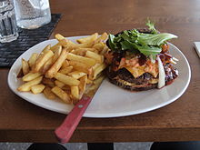

Try our delectable burgers. $9.99
Try our delectable burgers. $9.99
A high-quality hamburger patty made entirely of ground (minced) beef and seasonings; these may be described as "all-beef hamburger" or "all-beef patties" to distinguish them from inexpensive hamburgers made with cost-savers like added flour, textured vegetable protein, ammonia treated defatted beef trimmings (which the company Beef Products Inc, calls "lean finely textured beef"), advanced meat recovery, or other fillers. Seasonings may include salt and pepper and others like as parsley, onions, soy sauce, Thousand Island dressing, onion soup mix, or Worcestershire sauce. Many name brand seasoned salt products are also used.
